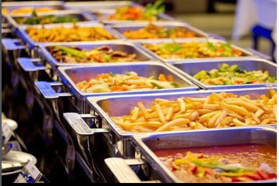

Bringen Sie die tiefe, herzliche Gastfreundschaft Ostafrikas auf Ihre Feier. Stundenlang butterweich geschmortes Beef Stew in reichhaltiger Tomaten-Kräutersauce, duftender Nelken-Zimt-Pilau-Reis, gedämpfte Kochbananen (Matooke) und ofenfrische Chapati-Fladenbrote. Serviert in professionellen Warmhaltebehältern für 15 bis 300+ Gäste.

Jedes Gericht wird am Eventtag frisch nach traditionellen ugandischen Familienrezepten von Chef Olive zubereitet und in professionellen Chafing-Dishes serviert.

Über 4 Stunden sanft geschmortes Rindfleisch in reichhaltiger Tomaten-Kräutersauce mit frischem Ingwer und Knoblauch.

Zarte Hähnchenstücke, mariniert in ostafrikanischem Curry, Koriander, Zwiebeln und feinen Kräutern.

Grüne ostafrikanische Kochbananen, traditionell im Bananenblatt gegart. Stärkereich, samtig und bekömmlich.

Handgeknetete, mehrlagig geschichtete Chapatis. Frisch gebacken, warm im Weidenkorb gereicht.

Feiner Langkornreis, geröstet mit ganzen Nelken, Zimtrinde, Kreuzkümmel und Kardamom.
Locker gedämpfter Basmatireis – die milde Grundlage für alle Schmorgerichte und Saucen.

Kross gebackene Teigtaschen, gefüllt mit Rinderhack oder würzigem Gemüse-Erbsen-Curry.
Ostafrikanische Kardamom-Krapfen, goldgelb gebacken und serviert mit Bio-Blütenhonig.

Knackige Rohkost, frische Strauchtomaten, rote Zwiebeln, Limettensaft und Koriander für maximale Frische am Buffet.

Würzige Erdnuss-Sauce, Tomaten-Schmorsauce und pikanter Schärfedip zum Verfeinern.

Das berühmte Nationalgericht als Ergänzung oder Highlight-Station zum Buffet buchbar.
Hochwertige Edelstahl-Warmhaltebehälter, Brennpaste, Vorlegebesteck und Chapati-Körbe stellen wir komplett bereit.
Sehen Sie das Chafing-Dish-Setup und die warme Wohlfühlatmosphäre bei einem Firmenevent in München.
Chafing Dish Warmbuffet · München
Dachauer Altstadtfest · Live Catering